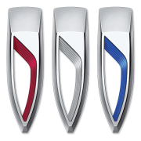

AUTOMOTIVE RESEARCH
Brand History
Independent historical profiles built around documented turning points, representative vehicles, engineering choices, and the wider industry context behind each marque.
AlpineBrand history & research AMCBrand history & researchAston MartinBrand history & researchAudiBrand history & researchAustinBrand history & researchAustin-HealeyBrand history & researchBentleyBrand history & researchBMWBrand history & researchBugattiBrand history & research
AMCBrand history & researchAston MartinBrand history & researchAudiBrand history & researchAustinBrand history & researchAustin-HealeyBrand history & researchBentleyBrand history & researchBMWBrand history & researchBugattiBrand history & research
AMCBrand history & researchAston MartinBrand history & researchAudiBrand history & researchAustinBrand history & researchAustin-HealeyBrand history & researchBentleyBrand history & researchBMWBrand history & researchBugattiBrand history & research
BuickBrand history & researchCadillacBrand history & researchChevroletBrand history & researchChryslerBrand history & researchCitroenBrand history & researchDatsunBrand history & researchDeLoreanBrand history & researchDodgeBrand history & researchFerrariBrand history & researchFiatBrand history & researchFiskerBrand history & researchFordBrand history & researchGenesisBrand history & researchGMCBrand history & researchGumpertBrand history & researchHondaBrand history & researchHummerBrand history & researchHyundaiBrand history & researchInfinitiBrand history & researchInternationalBrand history & researchIsuzuBrand history & research